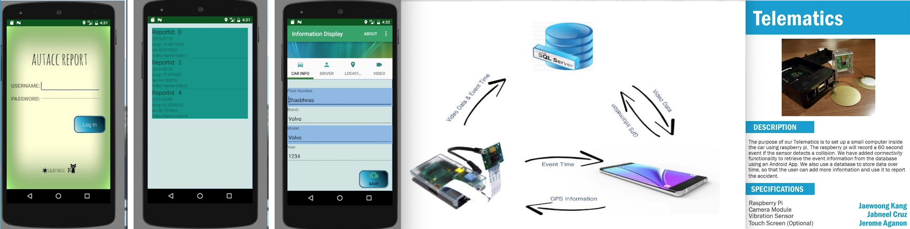
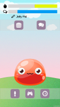

Jaewoong Kang Projects Status
Completed Projects
1. Autacc Report

This app lets you retrieve the incident that was recorded by the collision hardware and add more information about the incident.
The hardware will record the video, location of the incident and the time and date of the incident.
- Recording Video: Raspberry Pi and Pi Cam
- Application: Android Studio
- Programming Languages: Python for Raspberry Pi application, Java for Android application
2. Jelly Pal Android Application

Jelly Pal is an interactive friend who lives in your phone and helps manage your mental health
You can talk to your Jelly Pal and feed it, just like a real pet
Jelly Pal even has two games, a rhythm game to distract you and a breathing game to help deal with panic attacks
You can also schedule reminders so that the Jelly Pal will remind you when to take your medication
- Target Platform: Android SDK 23, Min SDK 21
- Development Tool: Unity
- Programming Languages: C#
- Important Assets: Pixel Crushers Dialogue for Unity, Moonflower Carnivore Jigglu Bubble Free
3. Belphegor RPG Game

A dungeon crawler RPG with spells, monsters, fast-paced combat, and treasure hunting elements. Choose your class and prepare for adventure
- Target Platform: Windows7 or Higher
- Development Tool: Unity3D
- Programming Languages: C#
- Important Assets: uMMORPG Realistic Effects Pack 4, Heroic Fantasy Creatures Pack Vol 1
4. DalChemistry AR

This is a simple AR android application that can generate a molecular 3D model from image
Users can check the molecular 3D models from target images or inputs, and can view its animation
- Target: Dalhousie University Chemistry Students
- Target Platform: Android SDK 26, Min SDK 23
- Development Tool: Unity3D
- Programming Languages: C#
- Important Assets: Wikitude AR
5. ButaRamen Wage Calculator for Android

This is simple wage calculator for a specific restraunt
Users can calculate all employees' wages and tips and store all results and data into Mysql database or Firebase
- Target Platform: Android SDK 26, Min SDK 26
- Development Tool:
- Programming Languages:
- Progress: 70% done(Initial version of UIs and activities, Calculator functions, Communication between app and Firebase has been completed)
Currently stopped due to the changing target platforms
Projects in Progress
1. Cat in the Zoo Game

Simple mobie adventure game. Player should control a cat to get more food in the zoo
- Target Platform: Android and IOS
- Development Tool: Unity3D
- Programming Languages: C#
- Important Assets: Low Poly Animated Animals - POLYPERFECT
- Progress: 10% done (Player controller, added animations for idle, run, walk, jump, and attack are completed)
2. Buta Calculator Unity

This is a simple calculator for calculating all employees' wages and tips
Due to the request of a restraunts' owner, modified all codes for multiple branches in Atlantic Area
Target platform is also changed to multiplatform such as Windows, OSX, IOS, and Android
- Target Platform: Windows, OSX, Android, and IOS
- Development Tool: Unity3D
- Programming Languages: C#
- Important Assets: REST API for Unity
- Progress: 50% done (Communication between application and Firebase, all initial version of UI)